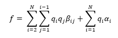
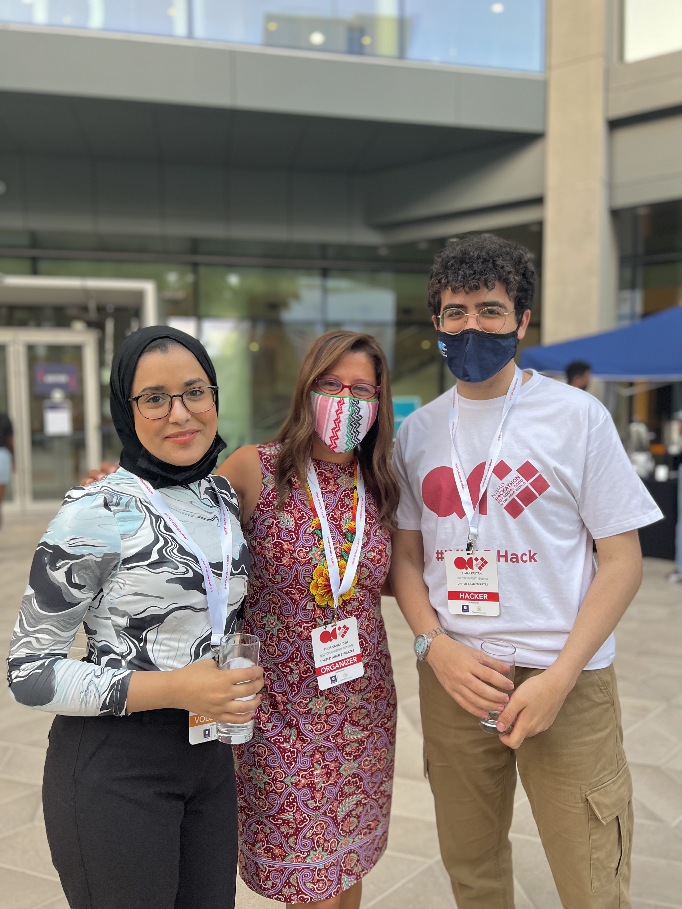
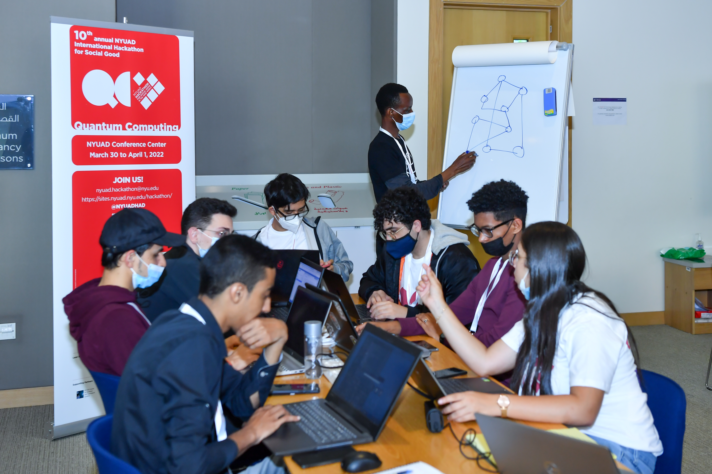
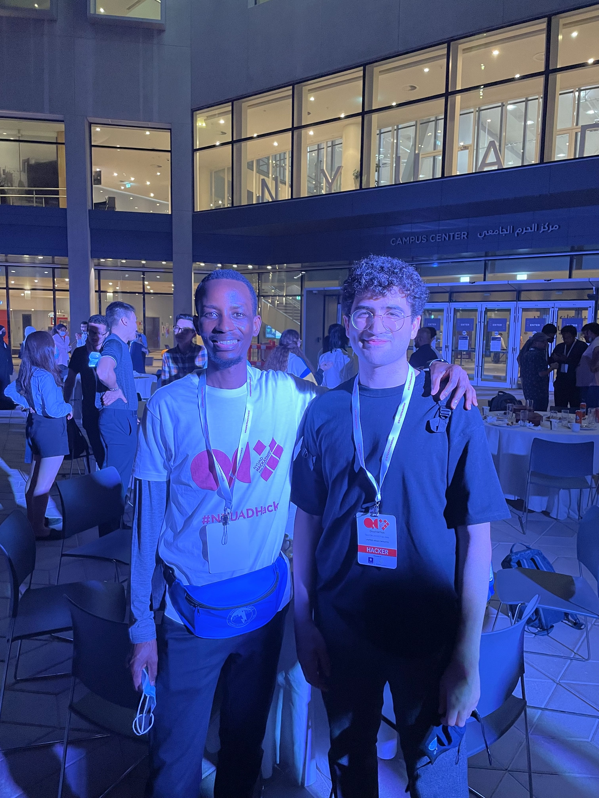
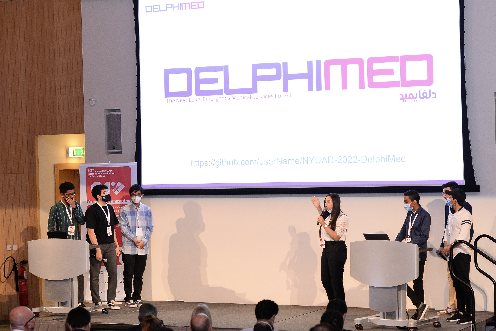
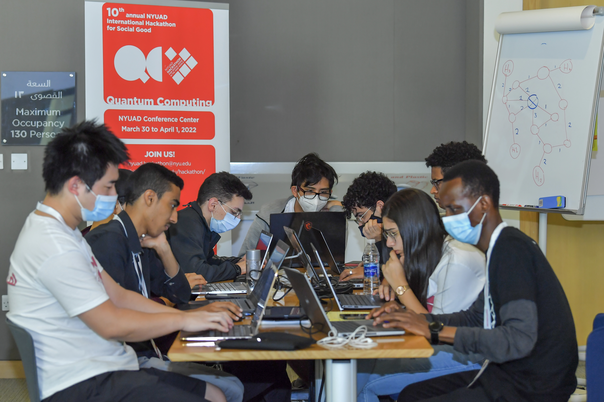

|
DelphiMed |
A quantum optimized assignment of patients to hospitals during a pandemic using the Quantum Annealing on D-Wave.
- This project was created during the 10th Annual NYUAD Hackathon for Social Good in the Arab World: Focusing on Quantum Computing (QC) - you can read more about my experience in the hackathon here
- The motivation of the project was knowing that in Tokyo alone, 160,000 people were harmed during the Covid-19 pandemic because they were unable to be offloaded to an A&E in the required time. According to our team mentor Ken Tanaka who worked in a hospital in Japan during the pandemic, they were only able to receive 5 calls out of 200 made in one day because of the hospital's unavailability. Around 10,000 calls were missed by all hospitals on average in Tokyo per day. You can read more about our project here.
- DelphiMed minimzes the cost function below so that the optimal hosptital can be matched for the patient in an emergency case. Using classical computers, it is not feasible to minimize the cost function for a large number of patients given multiple different parameters in real-time in a short time period. Our approach uses quantum annealing algorithms to minimize the cost function to find betas (matching) given the alphas - Demo 
Hackathon Photos:







